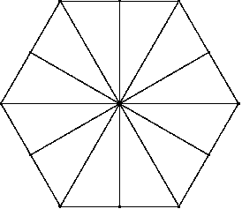

Step 1
| The Poincare disc will be built inside a regular hexagon, whose edges and vertices act as scaffolding for some geodesics of the tiling. |
| Begin with a regular hexagon, with all its diagonals and perpendicular bisectors of its sides. |
|  |
| A regular hexagon with all its diagonals and the perpendicular bisectors of its sides. |
Return to construction.